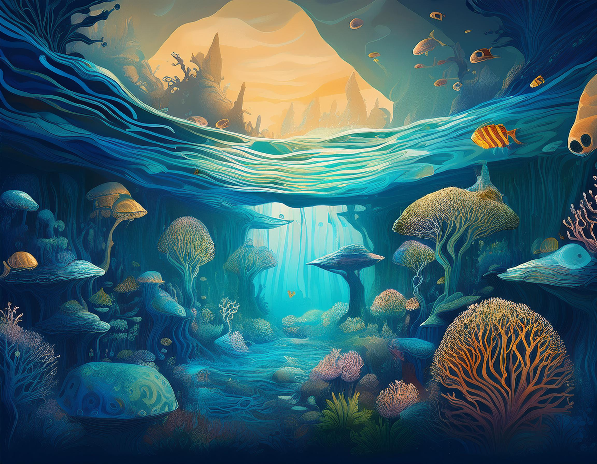
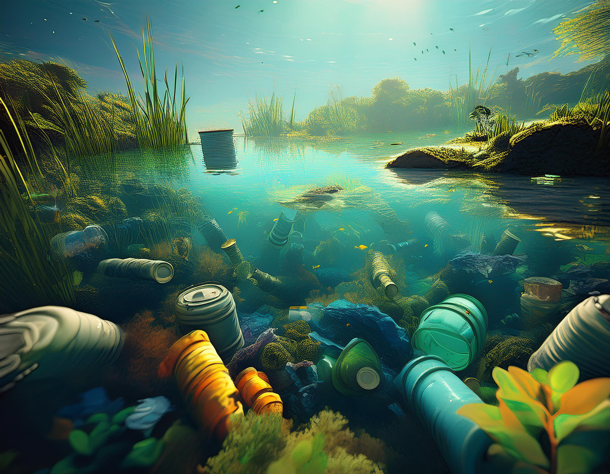
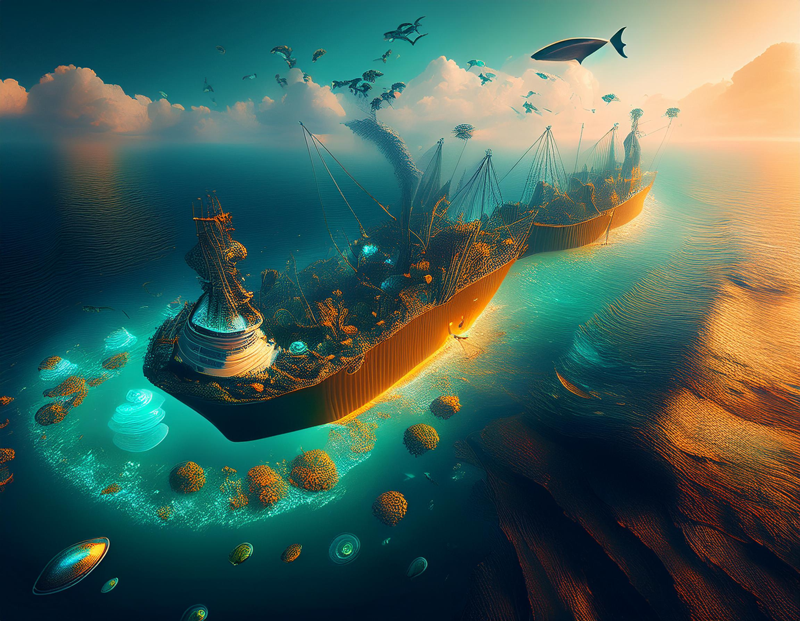
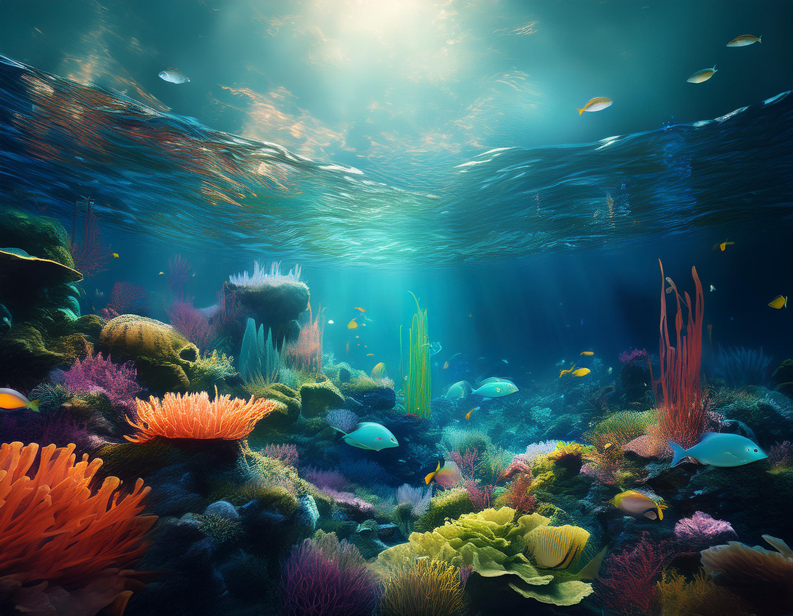

Introduction
The Earth's oceans and freshwater ecosystems, covering over 70% of the Earth's surface,
are valuable but vulnerable resources supporting biodiversity while providing essential services—oxygen,
climate control, food,
and economic opportunities for billions. While they are subject to critique, these ecosystems are under attack as never before
by human activities
that have been made worse since the industrial revolution. The UN's Sustainable Development Goal 14
recognizes that safeguarding
water environments is crucial to human progress. This essay discusses three most critical factors of human
influence: pollution,
overexploitation of resources, and the impact of climate change. An understanding of these linked issues is
important to develop
solutions that safeguard life underwater and, by association, life on our planet.

Pollution and Contamination of Aquatic Ecosystems
Pollution is perhaps the most overt human impact on underwater ecosystems. Approximately 11
million metric tons
of plastic enter the oceans annually—a figure set to triple by 2040 if large-scale
intervention.
Once they have entered marine ecosystems, plastics disintegrate into microplastics and nanoplastics, which have been
discovered
from the deepest ocean trenches to remote Arctic ice. These particles persist for centuries and are
ingested by marine organisms
at all trophic levels, inflicting physical harm and serving as carriers of harmful chemicals that can
bioaccumulate in marine food webs.
Chemical pollution injects a cocktail of toxic compounds into aquatic systems.
Drugs modify reproductive patterns
in fish and other species even at very low doses. Heavy metals accumulate in ocean
tissues, causing neurological damage
and reproductive failures. Agricultural runoff creates coastal "dead zones" through
eutrophication—excessive nutrient loading that triggers
harmful algal blooms, reduces oxygen levels, and establishes uninhabitable conditions for most marine life.
Oil pollution, though less chronic than plastic or chemical contamination, causes devastating acute
impacts when spills occur.
Major disasters like the Deepwater Horizon blowout in 2010 demonstrate the catastrophic potential of
such activities.
Less conspicuous threats are shipping, construction, and military noise pollution, which
interferes
the essential acoustical communications of many ocean species, and light pollution that disorients
sea turtles, seabirds
and other species that are reliant upon natural photic signals to migrate and reproduce.
.

Overexploitation of Marine Resources
The human relationship with marine resources has transformed dramatically in recent decades.
Industrial fishing technologies—including factory trawlers, extensive longlines, and sophisticated
sonar—have effectively
industrialized what was once a relatively low-impact activity. Global fish catch increased fivefold
between 1950
and 1990 before plateauing and beginning a gradual decline despite increasing fishing effort. According
to the Food and Agriculture Organization,
34.2% of fish stocks are now fished at biologically unsustainable levels, with another 59.6% maximally
sustainably fished.
Particularly concerning is the phenomenon of "fishing down the food web," where higher-value predatory
species are depleted first,
forcing fishing operations to target progressively smaller species at lower trophic levels. This cascade
fundamentally alters marine
ecosystem structure and resilience. The collapse of Atlantic cod in the early 1990s exemplifies these
dynamics;
despite a moratorium on commercial fishing since 1992, the population has shown minimal recovery.
Deleterious fishing methods add to overfishing through harming sea habitats. Bottom
trawling—pulling weighted nets
along the seafloor—effectively clear-cuts underwater terrain, wiping out long-living corals, sponges,
and other organisms taking part in shaping the habitat.
Incidental catches—bycatch—of non-target organisms are another challenge, with maybe
40% of sea catch going to waste worldwide,
like vulnerable sea turtles, marine mammals, and seabirds.
Beyond fishing, emerging industries like deep-sea mining threaten unique benthic ecosystems
characterized by extremely high endemism
and low disturbance resilience. Researchers warn that such activities could result in unprecedented
biodiversity loss in widely unexplored
environments.

Climate Change Impacts on Underwater Environments
Climate change is arguably the most significant human influence on life in the water, impacting all
ocean basin
and aquatic ecosystems on the planet. Over 90% of anthropogenic global warming's excess heat has been
absorbed by the oceans,
resulting in an average warming of 0.13°C per decade of the uppermost 75 meters of water since
1971. This warming forces
species to extend their range poleward or into deeper waters when able, and sessile organisms and
mobility-limited species
face severe adaptation challenges.
Coral reef ecosystems are instances of the oceans' destructive force of global warming. When water temperatures exceed corals' thermal tolerance,
they eject their symbiotic algal partners through a process known as bleaching. The Earth has experienced three planetary
coral bleaching incidents since 1998,
with the 2014-2017 incident impacting 70% of coral reefs globally. Models indicate that even if global
warming is limited to 1.5°C
compared to preindustrial levels, 70-90% of tropical coral reefs will be gone by 2100.
Ocean acidification through uptake of anthropogenic carbon dioxide threatens calcifying
organisms that build shells
or calcium carbonate skeletons. Surface ocean pH has already fallen by 0.1 units since the
pre-industrial era—a 30% increase
in acidity—and is predicted to drop by a further 0.3-0.4 units by the year 2100 under high-emission scenarios.
Deoxygenation is a third major climate-related threat. Hotter water just has less dissolved
oxygen, with increased thermal
stratification reduces vertical mixing. Concurrently, warming accelerates metabolic rates in marine
organisms, elevating their oxygen requirements.
The area of oxygen minimum zones increased by some million cubic kilometers since mid-20th
century.
The cumulative impact of these multiple climate stressors exceeds what would be expected from any single
factor,
creating synergistic effects that may push many marine ecosystems beyond tipping points from which
recovery becomes impossible.
